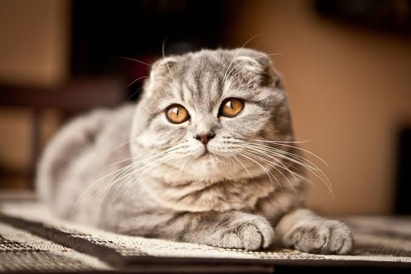
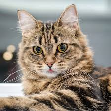
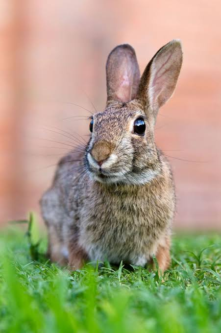
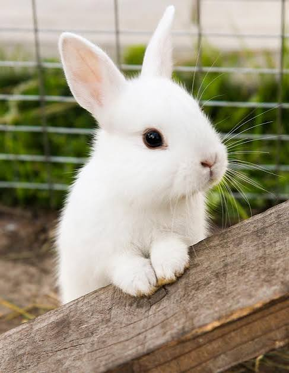
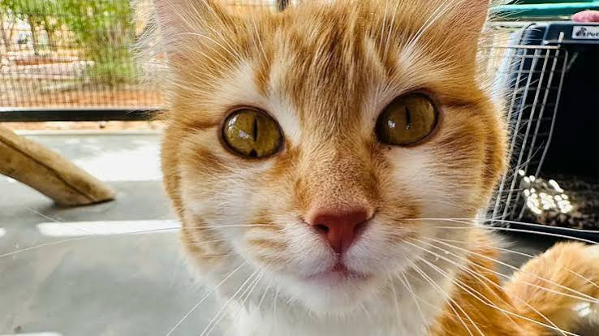

Cat
Meow
Age: 1 year
A gentle companion who enjoys a calm home and cozy naps.
Every pet has a personality of their own. Find a new friend who fits your home and lifestyle.

Cat
Age: 1 year
A gentle companion who enjoys a calm home and cozy naps.
Dog
Age: 2 years
A friendly little dog who would enjoy walks and family time.

Cat
Age: 3 years
A sweet, curious cat who likes a safe place to explore.

Rabbit
Age: 1 year
A quiet rabbit who needs a roomy, secure place to hop.

Rabbit
Age: 8 months
A young rabbit who needs gentle handling and daily care.

Cat
Age: 2 years
An affectionate cat who would love a comfortable indoor home.